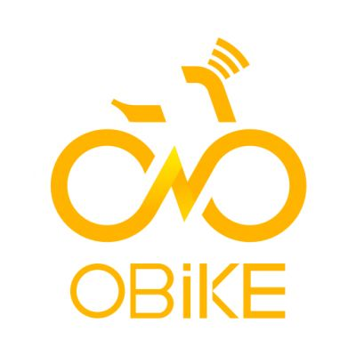
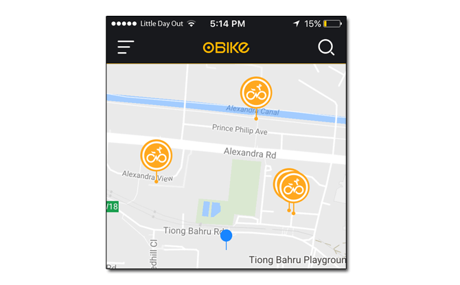
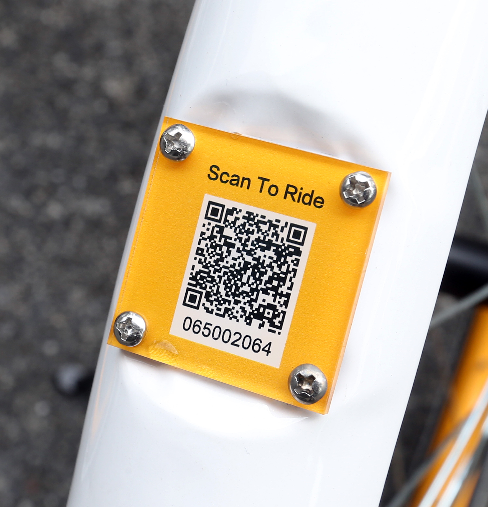

3 Simple Steps
1. Download the oBike application (app) in your mobile (available in both google play and app store.)

2. You can locate the nearest bicycle in your area using the oBike app.

3. Scan the QR Code using the app to unlock the oBike. 
About oBike:
oBike is Singapore's first hometown station-less smart bike-sharing company that uses technology to change how transportation is viewed locally.
It offers commuters convenient and alternative mode of transportation.
Commuting bicycle via oBike provides environment-friendly commute, helps to reduce traffic congestion, making the city a better place to live in especially given Singapore's compact size and interconnected urban areas.
Additional information:
You are able to reserve a bicycle by clicking the reserve button.
Upon reservation, the bicycle will be reserved for you for 10 minutes and you can proceed to unlock it.
After 10 minutes, the reservation will be expired.
If you reserve a bicycle successfully, it will be the only bicycle shown on your map and you can proceed to find it.
The bicycle's location might vary from the app slightly, so please look around for it. It is also possible for you to unlock another bike.
However, the existing reservation will be cancelled.
The reason for the need of a deposit is to ensure user's responsibility while using our service. The deposit is refundable if the user decides not to continue with our service.
To pay the deposit, please enter Member Centre, My wallet and click Pay deposit.
To get a refund for your deposit, please go to My wallet, and click the link for refund deposit. You will receive your deposit back within 14 working days.
If you did not receive your refund after 30 working days, please inform us and we will look into it immediately. You can request for refund of deposit once at NO cost. For request of refund after this, a transaction fee will be impsed and deducted from the deposit.
The balance in your wallet can only be used to pay for your ride. The balance has no expiration date, is non-refundable and non-transferable.
The pricing of your ride may vary according to your credit points. Users who show poor riding habits (lower credit points) may be subjected to higher rental rates. While those with higher credit points may enjoy discounted rates on their rides.
If the balance in your wallet is less than 0, you should top up your wallet. However, if you are already riding, it will not prevent you from completing your trip. To top-up your wallet, enter User Centre, My wallet and top-up your preferred amount.
Operating area: Islandwide in Singapore
Each User will receive 100 oBike credits upon registration.
This system is to encourage positive riding and resposible behaviours which send strong signal to negative ones through the deduction of these credits. Some of the irresponsible acts may warrant police reports. For example: Bikes being tempered with, stolen or damaged.
Credit Points Rules:
| Bad behaviour | Points | |
|---|---|---|
| Parking at non-designated public bike-parking areas | -20 | |
| Forgetting to lock but the bike is not lost | -20 | |
| Violation of traffic rules | Reduce to 0 | |
| Adding private lock | Reduce to 0 | |
| Losing a bike | Reduce to 0 | |
| Moving oBike around illegally | Reduce to 0 |
| Good behaviour | Points | |
|---|---|---|
| A normal ride | +1 | |
| Reporting a broken bicycle | +2 | |
| Reporting an illegally-parked bicycle at non-designated bike parking areas | +3 | |
| Inviting friends to sign up | +2 | |
| Entering a friend code | +2 | |
| Sharing your ride on Facebook for the first time | +2 |
Your total point: 100
Credit Scoring System:
Enter your total point (from above) to find out how much you need to pay:
Results:
To check your detailed records of your credit, please enter User Centre,My Credit, Record. If you find any issues with your credit record, inform us by clicking Report. We will look into it as soon as possible.
At the end of the ride, please park the bike in a designed public-parking area and lock it using the app.
Please do not park anywhere that causes obstruction, or a private place such as your home which prevent other users from finding it. The bicycle do not belong to you.
We encourage users to wear helmets while riding oBikes for your safety. For any information on good bicycle riding safety habits, click here!
Any questions about oBike? Do you any help? Or you want to drop us a feedback? Then contact OBike: By emailing to service@o.bike
Social Media platforms: